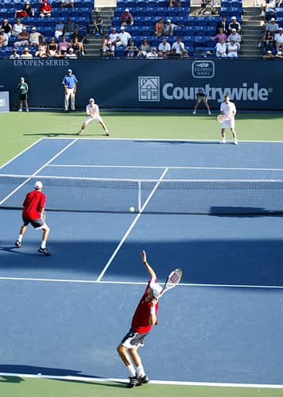

What is tennis?
Tennis is a racket sport that is played either individually against a single opponent (singles) or between two teams of two players each (doubles). Each player uses a tennis racket that is strung with cord to strike a hollow rubber ball covered with felt over or around a net and into the opponent's court. The object of the game is to maneuver the ball in such a way that the opponent is not able to play a valid return. The player who is unable to return the ball validly will not gain a point, while the opposite player will
Source: https://en.wikipedia.org/wiki/Tennis

Gameplay
A game of tennis consists of a number of games which make up a set.
Game
The standard game consists of a minimum of 4 points. The score of the server is called first, and goes as follows:
No point = "Love | First Point = "15" | Second Point = "30" | Third Point = "40" | Fourth Point = "Game." For example, if the server wins the first point, the score is "15 - Love." If the receiver wins the first point, the score will be "Love -15." The game is won when a player wins 4 points with at least 2 clear points. If each player wins three points, the score will be "40 - 40." This is known as "DEUCE." After Deuce, the score will be "ADVANTAGE" to the player who wins the point. If that same player wins the next point, they will win the game. If they lose the point, the score will return to Deuce.
Set
A SET consists of 6 GAMES and is won by the first player to reach 6 games, with at least a 2 game lead. At the start of a set, Player A will serve for the duration of the first game. The players will then switch ends of the court, and Player B will then commence serving. After this, the player will continue to switch ends every 2 games. If a set goes to 5 - 5, the set will be extended to 7. If the set reaches 6 -6, the winner of the set will be determined in a "Tie Break."
Source: https://tenniscreative.com/tennis-rules/
Source: https://tenniscreative.com/tennis-rules/